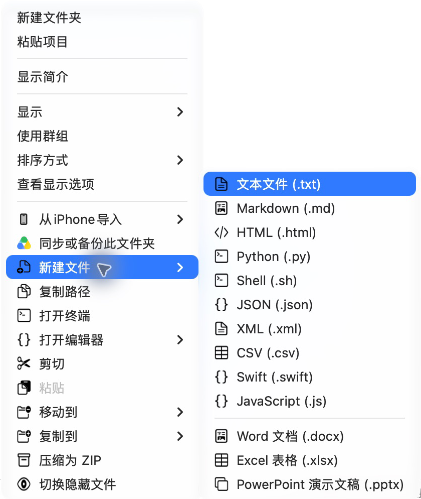
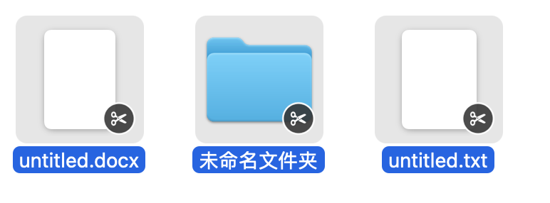
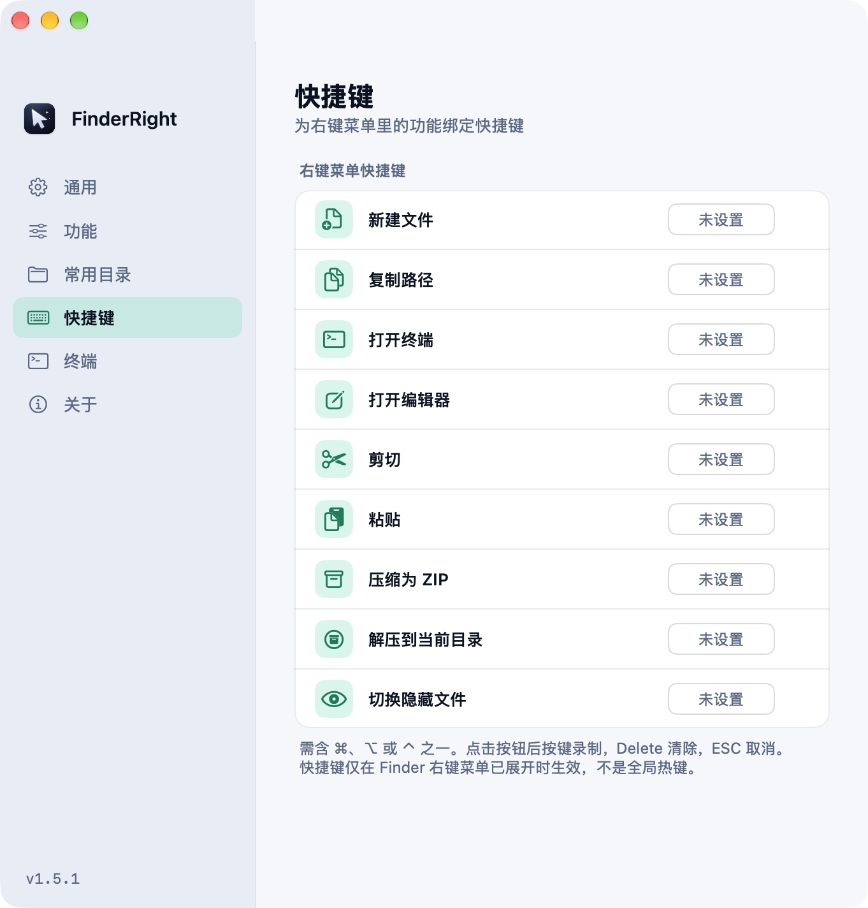

新建文件
文本、Markdown、代码，或空白 Office 文档。在当前文件夹直接创建，也支持自己的文本模板。
.md.py.json.docx
右键新建文件、打开终端、剪切粘贴。文件操作在本地完成。



为新建文件、打开终端、剪切粘贴绑定快捷键。展开 Finder 右键菜单后，就能用熟悉的按键操作。
FinderRight 在本地执行文件操作。源码公开，可以阅读、构建，也可以改成自己喜欢的样子。
适用于 macOS 13 及以上、Apple Silicon。目前暂不支持 Intel Mac。
当前版本使用自签名证书，尚未经过 Apple 公证。若系统拦截，请确认安装包来自官方发布，再执行右侧命令。
按应用引导启用 Finder 扩展。在受保护目录使用功能需完全磁盘访问；无闪烁切换隐藏文件需辅助功能权限。
是的。FinderRight 免费使用，并采用 MIT 协议开源。你可以使用、查看源码，也可以自行构建。
当前版本支持搭载 Apple Silicon（M 系列芯片）、运行 macOS 13 及以上系统的 Mac，暂不支持 Intel 架构。
当前版本使用自签名证书，尚未经过 Apple 公证。请从官方 GitHub Release 下载，并按上方安装指南允许首次打开。
iCloud Drive、Google Drive 等 File Provider 云盘目录限制第三方 Finder 扩展菜单。FinderRight 在这些目录通过「服务」子菜单提供操作；完全磁盘访问不能解除这一限制。
Finder 会缓存扩展进程。更新后需要重启访达，才能加载新扩展。可在终端执行「killall Finder」，访达窗口会关闭并重新打开。
点击 FinderRight 菜单栏图标，在「最近操作」里查看。失败项会显示原因，成功项可在访达中定位结果；保留菜单栏图标才能看到这些提示。